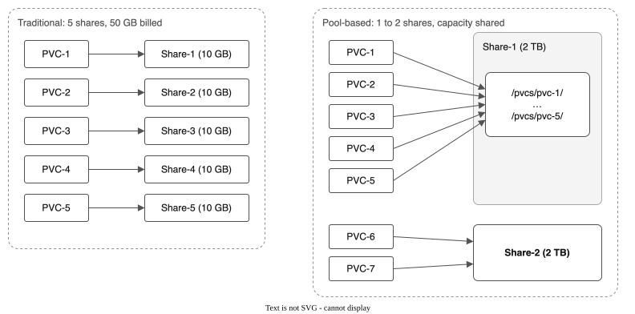

Getting started with the IBM VPC File Pool CSI driver¶
Create a pool of VPC file shares, make a volume on it, and read the data back from a new pod. It takes about 10 minutes on a cluster with the driver installed.
Time: about 10 minutes.
What you will do¶
- Check that the driver is running.
- Create a pool that holds one 100 GB file share.
- Create a 10 GiB volume on the pool and write a file to it.
- Read the file back from a second pod, and clean up.
Terms used in this page¶
- Pool (
FileSharePool): a group of VPC file shares that the driver manages. Each volume is a folder on one of the shares. - Share: an IBM Cloud VPC file share. A pool creates its shares and adds more when it fills.
- StorageClass: the Kubernetes object a volume claim names to pick a storage backend. The driver makes one for each pool, named after the pool.
- PVC: a PersistentVolumeClaim, a request for a volume.
- SubVolume: the record the driver keeps for each volume. It names the share and the folder.

The diagram compares the two models. The stock IBM driver creates one share for each volume. This driver creates a few large shares and gives each volume a folder on one of them, so a volume is ready in seconds and uses one share quota slot for many volumes.
Before you begin¶
You need:
- An IBM Cloud Red Hat OpenShift cluster on VPC, with the driver installed. INSTALL.md lists the steps.
- The
ocCLI, logged in to the cluster as a cluster administrator. - The zone your workers run in. Find it with
oc get nodes -L topology.kubernetes.io/zone.
Step 1: Check that the driver is running¶
The controller pod shows 6/6 containers ready, and the driver is registered with Kubernetes.
oc get pods -n kube-system -l app.kubernetes.io/name=ibm-vpc-file-pool-csi,app.kubernetes.io/component=controller
oc get csidriver vpc-file-pool.csi.ibm.io
The second command lists vpc-file-pool.csi.ibm.io. If either command shows nothing, install the driver first with INSTALL.md.
Step 2: Create a pool¶
Replace eu-de-2 with your workers' zone, then apply the pool and the namespace for this guide.
oc create namespace start-here
cat <<EOF | oc apply -f -
apiVersion: storage.ibmcloud.io/v1alpha1
kind: FileSharePool
metadata:
name: start-pool
spec:
zone: eu-de-2
profile: dp2
shareSizeGB: 100
iops: 100
maxShares: 3
initialShares: 1
autoExpand: true
expandThresholdPercent: 80
allocationStrategy: spread
defaultPermissions: "0777"
defaultUID: 107
defaultGID: 107
EOF
The pool creates one 100 GB share with 100 IOPS. It adds up to two more shares when 80% of the capacity is in use. Creating the share takes between 30 seconds and 2 minutes. Watch the phase:
The pool is ready when PHASE shows Ready:
Step 3: Check the StorageClass¶
When the pool is ready, the driver creates a StorageClass with the pool's name.
NAME PROVISIONER RECLAIMPOLICY VOLUMEBINDINGMODE ALLOWVOLUMEEXPANSION AGE
start-pool vpc-file-pool.csi.ibm.io Delete Immediate true 36s
Step 4: Create a volume and write a file¶
The claim asks for 10 GiB from the start-pool StorageClass. The pod runs as user 107, the user the pool gives each folder to, and writes one file.
cat <<EOF | oc apply -f -
apiVersion: v1
kind: PersistentVolumeClaim
metadata:
name: first-volume
namespace: start-here
spec:
accessModes:
- ReadWriteMany
storageClassName: start-pool
resources:
requests:
storage: 10Gi
---
apiVersion: v1
kind: Pod
metadata:
name: writer
namespace: start-here
spec:
securityContext:
runAsNonRoot: true
runAsUser: 107
seccompProfile:
type: RuntimeDefault
containers:
- name: app
image: busybox
command: ["sh", "-c", "echo Pool CSI storage works > /data/note.txt && ls -ln /data && cat /data/note.txt"]
securityContext:
allowPrivilegeEscalation: false
capabilities:
drop: ["ALL"]
volumeMounts:
- name: data
mountPath: /data
volumes:
- name: data
persistentVolumeClaim:
claimName: first-volume
EOF
The claim binds within seconds. Check it and read the pod's output:
The STATUS column shows Bound, and the log ends with the text the pod wrote:
NAME STATUS VOLUME CAPACITY ACCESS MODES STORAGECLASS AGE
first-volume Bound pvc-4f02a860-46aa-4675-be1d-3c60a8c9038d 10Gi RWX start-pool 10s
See how the pool recorded the volume:
The pool shows ALLOCATED 10 and PVCS 1. The SubVolume names the share that holds the volume.
Step 5: Read the file from a new pod¶
Delete the writer pod. The volume and its data stay, because the claim still exists. Start a second pod that mounts the same claim and prints the file.
oc delete pod writer -n start-here
cat <<EOF | oc apply -f -
apiVersion: v1
kind: Pod
metadata:
name: reader
namespace: start-here
spec:
securityContext:
runAsNonRoot: true
runAsUser: 107
seccompProfile:
type: RuntimeDefault
containers:
- name: app
image: busybox
command: ["sh", "-c", "cat /data/note.txt"]
securityContext:
allowPrivilegeEscalation: false
capabilities:
drop: ["ALL"]
volumeMounts:
- name: data
mountPath: /data
volumes:
- name: data
persistentVolumeClaim:
claimName: first-volume
EOF
oc logs reader -n start-here
The log shows the file written by the first pod:
Clean up¶
Delete the pod, the claim, the pool and the namespace, in this order. Deleting the pool also deletes its VPC file shares, and the data on them.
oc delete pod reader -n start-here
oc delete pvc first-volume -n start-here
oc delete filesharepool start-pool
oc delete namespace start-here
Next steps¶
Pick the row that matches your work.
| If you | Read |
|---|---|
| Run applications that need shared volumes | User guide, then Tutorial 2: Snapshots and clones |
| Run virtual machines on OpenShift Virtualization | Tutorial 1: Pool creation and VMs, then Tutorial 15: A VM from the catalog |
| Move volumes from the stock IBM driver | Tutorial 8: Migration and the console |
| Protect data with backups and restores | Tutorial 9: A COS bucket for backups, then Tutorial 10: Backup and restore |
| Plan disaster recovery to another region | Tutorial 6: Replication and failover |
| Operate the driver in production | Day 2 operations, Monitoring and Troubleshooting |
The tutorial index lists all 17 tutorials.